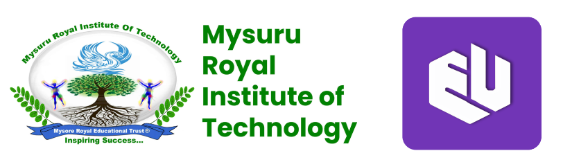
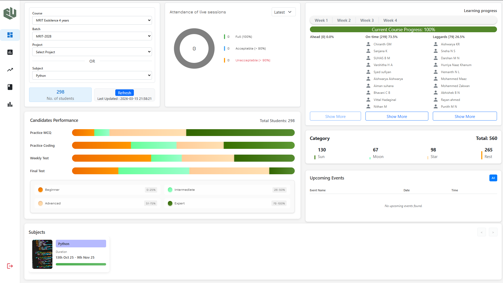
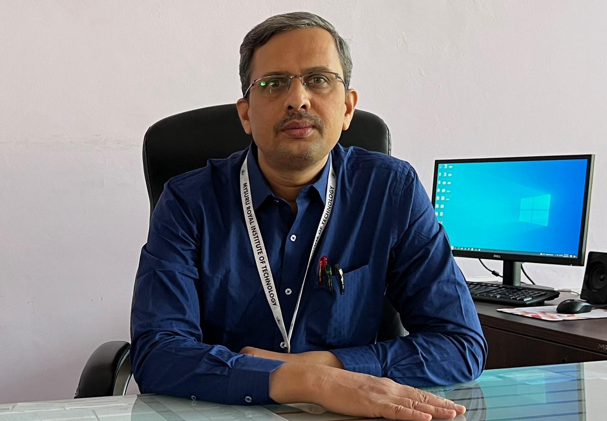

MRIT Placements through Exskilence

The MRIT-Exskilence Partnership

The rapid pace of technological innovation with the advent of Artificial Intelligence (AI) means that a traditional engineering curriculum, while foundational, needs to be supplemented with practical, hands-on training on the latest tools and technologies.
With this end in view, our college has joined hands with Exskilence, an Upskilling and Placement Assistance firm, to create a powerful skilling and placements ecosystem for our engineering students in Computer Science and related streams. This collaboration elevates employability, preparing students for successful careers and making them job-ready engineers from Day 1.

The Swapnodaya Upskilling Program excels in comprehensive training across technical and soft skills, ensuring participants gain practical, industry-relevant knowledge. Onsite workshops enhance learning through interactive sessions on advanced topics. Dedicated Spoken English classes boost communication fluency and confidence. Aptitude training prepares candidates for competitive exams. Internships provide hands-on experience aligned with coursework. Mock interviews offer valuable practice and feedback, refining interview skills. Placement assistance includes resume building and job search strategies, supported by a strong network of industry connections. Overall, the program effectively prepares participants for professional success, bridging the gap between education and career readiness with a well-rounded approach.

The Exskilence-Swapnodaya program's training in Python, SQL, DSA, and front-end development was thorough, combining theory with practical projects. The onsite workshops allowed for real-time interaction with instructors and covered advanced, practical topics. The Spoken English modules improved my communication skills. The Aptitude training focused on logical reasoning and problem-solving. The internships provided practical experience and mentorship from industry professionals. The Mock interviews simulated real interviews, offering constructive feedback that improved my performance and confidence. The Placement assistance included job updates, career counseling, and application support, which were crucial in securing my job at MetaYB. Overall, the program's comprehensive approach to skill development and placement support significantly advanced my career.

I am Akash, a Computer Science Engineer from MRIT. My college facilitated my skilling through the Exskilence Up-skilling program, which played a major role in helping me secure my placement at Zentrovia. During the internship, I learned Python full-stack development, including HTML, CSS, JavaScript, and MySQL. The hands-on training and guidance I received truly strengthened my technical skills and boosted my confidence.

Hello, I am Nikhitha Sai. I graduated in 2025 from MRIT. I am grateful to my college for arranging the Exskilence Training and Placement Support for us. The program was practical and well-structured. The trainers were supportive and ready to guide me whenever I had doubts. Thanks to this program, I successfully got placed in Deloitte. Their mock interviews, resume preparation guidance, and regular updates on job opportunities played a major role in my placement success.

I graduated in 2025 from Mysuru Royal Institute of Technology. My college enabled my up-skilling through the Exskilence-Swapnodaya program. It was only because of this program and their excellent Training and Placement Assistance that I was able to get placed at Deloitte with a package of 4 LPA. The training sessions were very helpful, and the team guided me throughout the program, from learning basic concepts to preparing for interviews. Their support boosted my confidence and helped me perform well during the selection rounds. Thank you, Exskilence-Swapnodaya, for your continuous guidance and support.

I am really grateful to my college, MRIT, for introducing the Exskilence Up-skilling and Placement Assistance program for our batch. This program played a major role in helping me start my career journey. The training sessions were clear, practical, and very supportive. Their team guided me throughout the process, from strengthening my concepts to preparing confidently for interviews. Thanks to this team—I truly appreciate their continuous guidance and dedication towards student up-skilling and placements.

I am Varshitha S, a Computer Science Engineer from MRIT. The Exskilence Up-skilling and Placement Support program started with soft-skills training which greatly improved my communication and confidence. Later, it moved on to technical training, where I gained hands-on experience through various coding challenges and intense practical training sessions. The entire program was extremely well planned. The on-site workshops and mock interviews boosted my confidence even further. Thanks to this program, I secured an opportunity to work as a React Developer at IgniteIQ, a US-based company.

Hello everyone, I'm Namitha BL, and I have graduated from MRIT. I'm super excited to share about the Exskilence Up-skilling and Placement Support program that my college MRIT arranged for us! Not only did the program help me improve my technical skills, but also soft skills, like English and communication. The training modules were well-structured and effectively deployed. There were on-site workshops and mock tests that really boosted our skills. They also had aptitude training and mock interviews. Thanks to this program, I'm currently working at Thought Process as a junior software developer.
While our college focuses on core academics, Exskilence enhances the skills of our students through their transformative upskilling program. The program highlights are as follows:
Our partnership prioritises student progress through individual tracking. The Exskilence proprietary software enables continuous tracking of every student's progress. College coordinators receive detailed reports to identify students needing additional support. The Principal can monitor student progress and coordinator tracking in real time, thereby, maintaining transparency and accountability.

By the end of the upskilling program, students are transformed from fresh graduates into professionals who possess the practical expertise and confidence of someone with 6 months to 1 year of real-world experience. The immersive, project-driven approach ensures they are not only familiar with the latest technologies but have applied their skills to industry-relevant challenges. When students step into interviews or their first roles, they stand out as highly capable candidates ready to contribute from day one.
Information Technology today is changing faster than ever, with AI changing every previous rule. The IT industry today cannot afford long lead times to make their freshers productive, and is therefore looking for job-ready talent.
As a sincere academic institution, committed to give our students the best chance of a successful career, we found it a huge challenge to meet this industry demand successfully. To overcome this challenge, we have now partnered with Exskilence Upskilling Bengaluru, a firm that is focused on skilling and placement support. The results of this association have been very heartening so far.
The Exskilence team is extremely committed to making the student truly job-ready. Their program delivers intense practical training using their own proprietary Learning Management System and Coding Platform. This is supplemented further by detailed on-site practical workshops. Personally, what I liked most about their program is how they track each student's progress every day. And this is shared with both the student and the college, for suitable action.
I am extremely optimistic of achieving some great results for our students through this partnership with Exskilence in the years to come.
